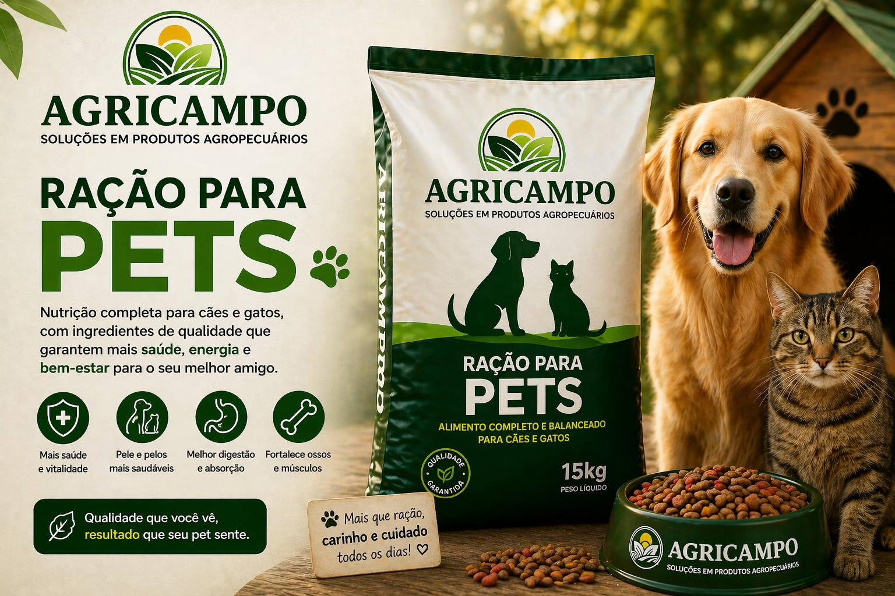
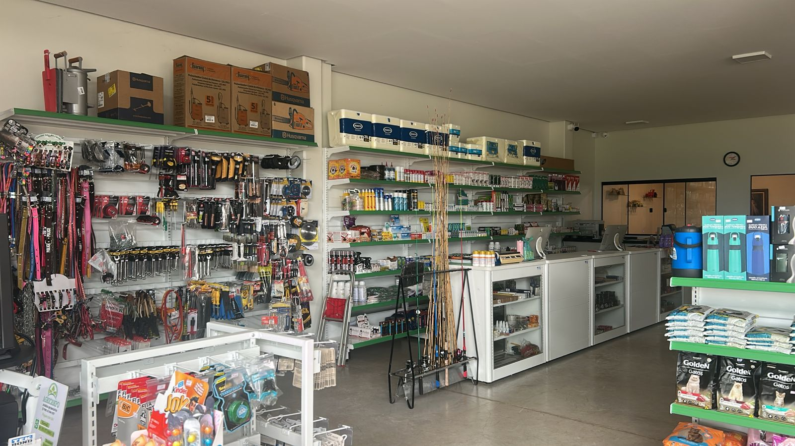
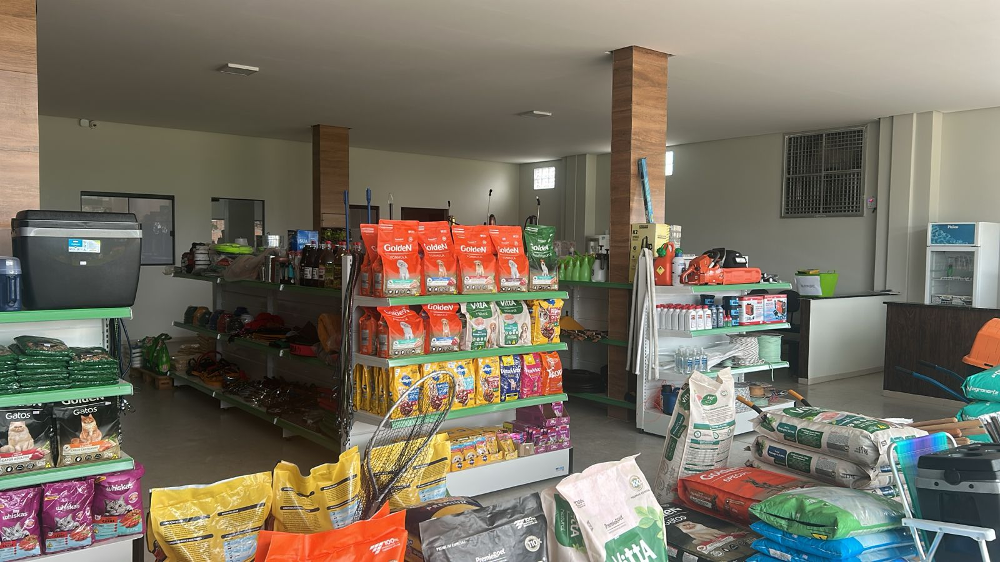

Tudo o que o campo precisa, perto de você.
Produtos confiáveis, atendimento próximo e boas condições para quem produz, cria e cuida.
Soluções para produzir, cuidar e crescer.
Na Agricampo, você encontra linhas para diferentes rotinas da propriedade, com orientação para escolher o que realmente atende à sua necessidade.
Rações e
sal mineral
Nutrição para pets, aves, suínos e bovinos.
Consultar opções 02Medicamentos e vacinas
Cuidado e prevenção para a saúde dos animais.
Consultar 03Fertilizantes
Produtos para fortalecer o desenvolvimento da lavoura.
Consultar 04Defensivos agrícolas
Soluções para proteger o potencial da sua produção.
Consultar 05Sementes
Opções para começar a produção com qualidade.
Consultar 06Ferramentas
Itens para facilitar a lida e os reparos do dia a dia.
Consultar 07Selaria
Acessórios e equipamentos para o trabalho com animais.
Consultar 08Arames e telas
Estrutura e segurança para a sua propriedade.
ConsultarUma escolha certa para cada criação.
Encontre rações para diferentes espécies e fases, com opções pensadas para saúde, desenvolvimento e produtividade.
Bem-estar em cada porção.
- Opções para cães e gatos
- Nutrição para diferentes fases
- Qualidade para a rotina do seu pet
Desempenho que acompanha o rebanho.
- Nutrição para bovinos
- Apoio ao desenvolvimento
- Sal mineral e linhas de ração
Nutrição para todas as fases.
- Opções para diferentes idades
- Desenvolvimento e produtividade
- Atendimento para orientar sua escolha
Da criação à postura.
- Linhas para aves de corte e postura
- Nutrição em diferentes fases
- Opções para a sua realidade

alimenta resultados


da nossa história
Variedade na loja. Agilidade no atendimento.
Quem trabalha no campo precisa de solução, não de espera. Por isso, reunimos produtos para diferentes necessidades e buscamos orientar cada cliente com atenção e rapidez.
Atendimento próximo para entender o que você precisa.
Produtos de qualidade para a rotina da propriedade.
Boas condições para facilitar sua negociação.
Da dúvida à solução, sem complicação.
Chame a equipe pelo WhatsApp.
Explique sua necessidade.
Consulte opções e condições.
O campo chama.
A Agricampo responde.
Campos Lindos — TO
Sábado, 7h às 12h